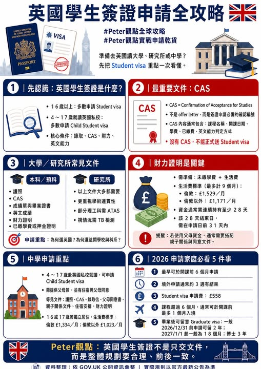

《看懂制度，選對世界》第一集
英國學生簽證申請全攻略
又到了 準備申請學生簽證的季節了。先認識：英國學生簽證叫 Student visa 英國原本大家熟悉的 Tier 4 Student Visa，現在已經改為 Student visa。

【 申請全攻略 】 又到了 準備申請學生簽證的季節了。先認識：英國學生簽證叫 Student visa 英國原本大家熟悉的 Tier 4 Student Visa，現在已經改為 Student visa。一般來說，16 歲以上學生若要到英國就讀大學、研究所、預科、Further Education 課程，或符合條件的英文課程，通常會申請 Student visa。如果學生年齡較小，特別是 4 至 17 歲要到英國私立學校就讀，則可能會使用 Child Student visa。
英國學生簽證的基本邏輯可以先抓三個關鍵： 學生是否被英國合格學校錄取 學校是否能核發 CAS 學生是否能證明學費、生活費與學習目的合理 所以，英國簽證不是拿到 offer 就自動通過，而是要等學校確認學生符合條件後，核發 CAS，學生才能正式申請簽證。. 英國學生簽證最重要文件：CAS CAS 全名是 Confirmation of Acceptance for Studies，中文可以理解為「錄取確認函」或「學生簽證擔保確認」。CAS 是由英國學校透過 Home Office 系統核發給學生的簽證用編號。
學生在填寫簽證申請表時，需要輸入 CAS reference number。常見流程如下： 1 學生取得英國學校錄取 2 學生完成學校要求條件，例如繳交押金、提供護照、財力或學歷文件 3 學校審核後核發 CAS 4 學生收到 CAS 後，才能正式送出 Student visa 申請 CAS 上通常會包含： 學生基本資料 學校與課程名稱 課程開始與結束日期 學費金額 已繳費金額 英文能力判定方式 學校擔保資訊 英國簽證申請中，CAS 是整份申請的核心。
若 CAS 資訊與學生護照、學歷、課程、付款紀錄不一致，就可能影響簽證審查。
. 大學申請重點：CAS、財力證明、英文能力、學習銜接 申請英國大學，常見文件包括： 1 有效護照 2 CAS 3 英國大學正式錄取文件 4 學歷文件，例如高中成績單、畢業證書、預科或 OSSD 成績 5 英文能力證明，如 IELTS、PTE、TOEFL，或學校認可的英文測驗 6 財力證明 7 已繳學費或押金證明 8 住宿安排，若已確認 9 ATAS，若科系需要 TB 肺結核檢測，若學生來自需要檢測的國家或地區 . 財力證明：英國學生簽證最常出問題的地方 英國學生簽證的財力證明，主要看兩個部分： 未繳的第一年學費 生活費 maintenance funds 生活費依地區不同： 倫敦地區：每月 £1,529，最多計算 9 個月 倫敦以外：每月 £1,171，最多計算 9 個月 也就是說，如果學生就讀倫敦以外地區，生活費通常需準備： £1,171 × 9 = £10,539 如果學生就讀倫敦地區，生活費通常需準備： £1,529 × 9 = £13,761 這還不包含尚未繳清的學費。
. 研究所申請重點：學術連貫與 ATAS 要特別注意 申請英國研究所，簽證文件比大學更重視學術背景與課程銜接。常見文件包括： 1 有效護照 2 CAS 3 大學成績單 4 畢業證書或在學證明 5 英文能力證明 6 財力證明 7 CV 履歷，若學校或科系要求 8 研究計畫，若為研究型碩士或博士 9 獎學金或資助文件 ATAS，若科系涉及特定科學、工程、科技或敏感研究領域 ATAS 是許多學生容易忽略的文件。
若學生申請的是部分理工、工程、科技、航太、材料、AI、物理、化學、生醫工程等研究相關課程，可能需要先取得 ATAS 才能申請簽證。尤其研究所學生，不建議等 CAS 出來才開始檢查 ATAS。因為如果 ATAS 需要較長審核時間，可能會壓縮後續簽證與機票安排。. 中學申請重點：Child Student visa、住宿、監護與父母同意 英國中學留學與大學申請的邏輯不同。對 來說，簽證審查除了學校錄取，也會重視學生在英國的生活照顧安排。
若學生是 4 至 17 歲，並要就讀英國私立學校，通常會考慮 Child Student visa。中學生常見文件包括： 1 有效護照 2 CAS 3 英國私立學校錄取文件 4 父母或法定監護人同意書 5 出生證明或親子關係文件 6 住宿安排，例如宿舍、寄宿家庭、親屬住所 7 學費與住宿費繳費證明 8 父母財力證明 9 過去成績單 TB 肺結核檢測，若適用 未滿 18 歲學生，父母同意書非常重要。中學簽證不是只看成績，而是要看學生抵達英國後是否有人照顧、住在哪裡、學校是否有完整安排，以及父母是否已正式同意。
對年紀較小的學生來說，住宿與監護安排，有時比成績單更關鍵。英國留學不是從登機那天開始，而是從你開始整理簽證文件的那一天，就已經進入正式準備階段。